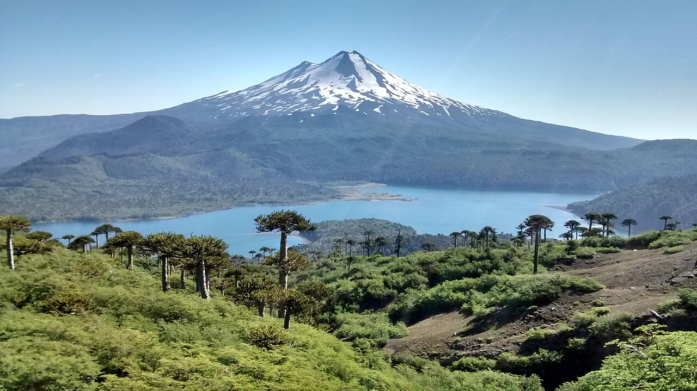

Talleres de artesanía
Conoce técnicas y oficios tradicionales de La Araucanía.
Ideas para acercarte a la naturaleza y a la vida local de la región.
Conoce técnicas y oficios tradicionales de La Araucanía.
Descubre productos y preparaciones propias de la zona.

Explora senderos y paisajes junto a personas que conocen el territorio.